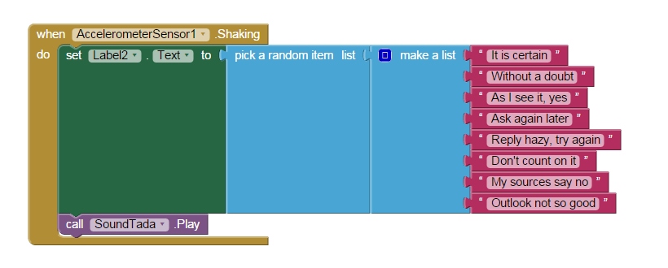

'Magic 8 Ball' Fortune Telling App
Created: February 5, 2015
This mobile application allows the user to receive a fortune by shaking, or tapping, the 8-ball. It was created in the course Game Design 2 using MIT App Inventor, and their tutorial which can be found here.
The code, in the form of a block interface, randomizes text to display from a list of predetermined phrases. It displays a new text item when the device is shaken, or the image/button is selected as well as plays an audio file.
